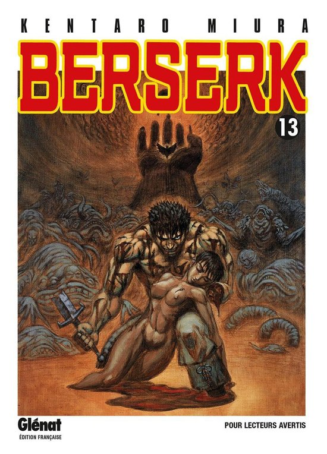

Tome
Tome 38

Dans ce tome 38 nous suivons Rickert qui découvre la cité Falconia avec ses bons et ses mauvais cotés. Par la suite il va prendre une décision qui va l'obliger à fuir la cité au plus vite pour rester en vie.
Tome 41

Au terme d’un long périple, grâce au rituel du “roi des pétales virevoltants”, Casca s’éveille enfin de son éternel cauchemar. Mais alors qu’elle retrouve enfin Guts, ses souvenirs atroces lui reviennent et elle pousse un hurlement de terreur…
Tome 42

Guts continue de lutter contre ses démons, dans une quête qui mêle douleur et espoir. Les dessins sont somptueux, chaque page regorge de détails saisissants, et l'intrigue atteint une profondeur émotionnelle rare.
Tome 13
Une autre dimension est apparue ! Avec elle, le passé perds toute importance. La Béhérit est revenue dans les mains de Griffith, et s'est joint au cri de son cœur, versant des larmes de sang et entraînant tous les compagnons dans la dimension parallèle.